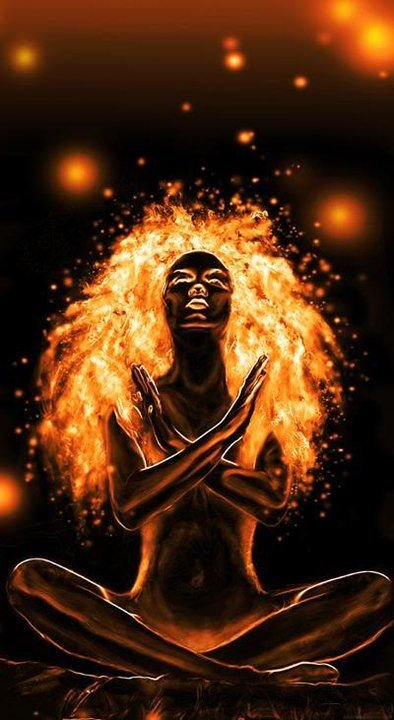

4 Бездуховные учителя
- Кто ты? Чего ты желаешь на самом деле? - услышала я голос, - будь искренней, будь честной с собой. Чего ты ждешь от нас?
- Я ищу способ сохранить сознание и память.
- Это мы помним. А что ещё? Может, хочешь нас ещё о чём-то попросить?
- Я просить не привыкла. Свои задачи я способна решить сама, мне ни от кого ничего не нужно.
В этот момент мне вспомнились слова Воланда:
"Никогда и ничего не просите! Никогда и ничего, и в особенности у тех, кто сильнее вас."
- Что ж, это похвально. Но сейчас не стесняйся. Не делай глупостей - от этого зависит твоё будущее. Будь предельно искрення с нами, от нас ты свои мысли не скроешь.
- Искренне? - я задумалась и поняла, что мне нечего сказать,- я хочу получить то знание, которым обладаете вы.
- Ты хочешь знание ради могущества? Не стесняйся - говори предельно честно.
- Да, конечно. Но не только ради этого. Я хочу учиться у вас и быть одной из вас. Говорить на вашем языке, понимать ваши традиции, узнать всё о вашем мире. Уметь то, что умеете вы. Узнать, что хранит память вашего рода.
- Хорошо... Но, может, можно ещё честнее?
- Хочу, чтобы вы были рядом и были моей семьёй. Разделять с вами общие радости и горести. Хочу научиться любить вас как братьев и сестер и быть любимой, если вы умеете любить своих близких. Я не доверяю людям, кроме близких родственников. Хочу иметь возможность доверять вам. Если вы меня обманете хоть раз - доверия не будет. А вообще... вы так давно меня знаете, вы же сами видите, что я на самом деле хочу... Я запуталась, но вам же известно, кто я и что я, что собой представляю - вы же уже давно поняли, что мне на самом деле надо.
- Не обманем. И помни: мы не терпим лжи и лицемерия. От тебя мы требуем лишь одно: абсолютную честность по отношению к себе и нам.
Два дня к Клавдии приходила медсестра, а в этот день вечером я вновь навестила Фазенду.
На веранде сидел Роберт в обнимку с коньячком. Гарик и Эдик обсуждали что-то в соседней комнате.
- О, решила заглянуть на наш огонек, - подмигнул мне Роберт, - знаешь, сижу и вспоминаю то чудесное время, которое мы не ценили. Клавдия ходила, в этом доме было больше тепла, больше жизни. Когда мы мальчишками были, тётя Клава пекла нам невероятно вкусные вареники. Помню, уплетали за обе щеки. Знаешь...
Роберт погрузился меланхолию. Он уже был почти пьян, но словно ещё трезв, на грани.
Роберт - недурной писатель и сценарист, но вынужден писать всякий ширпотреб, а его труды, которые он вымучил, выстрадал, никому оказались не нужны и грозят отправиться на свалку истории, если он их сам не сожжет на ритуальном костре.
- Над чем сейчас работаешь? - перевожу тему, поскольку мне нечего ему сказать.
- Как всегда... сценарии для этих мусорных сериалов. Хотел даже бросить, на стройку пойти, да плохой из меня рабочий. Мои книги никому не нужны, вот и выполняю заказы, от которых самому тошно.
- А ты всё равно пиши своё, настоящее. Пусть сейчас это никому не нужно, но однажды кто-то откроет твоё творчество. Я прочту!
- Ну да... когда наступит второе пришествие и сериалы сгинут. Мне кажется, оно уже не за горами. Наш мир трещит по швам. Знаешь... только не проболтайся этим циникам - начнут язвить. Я роман пишу, - сказал он, понизив голос, словно в этом романе было что-то сокровенное.
- Надеюсь, не о Понтии Пилате?
- Нет. О лешем.
- О ком?! - удивилась я.
- О лешем. Знаю, ты не поверишь, решишь как и все, что я напился и сбрендил... но это правда: однажды в нашем лесу я с ним повстречался.
- Отчего же... поверю. А как он выглядел?
- Да как хочет, так и выглядит. Порой он невидим. Заведет тебя в свой лес - и не выберешься, будешь вечно блуждать. Иногда мне кажется, я до сих пор блуждаю по лесу и вижу сны о Фазенде...
- А он с тобой говорил?
- Говорил... по-своему, правда. Водил меня кругами вокруг меня самого.
С этими словами Роберт сделал глоток из своего бокала.
- А ты, красавица, не боишься так долго по лесу гулять? Вдруг заприметит он тебя, - сказал насмешливо Роберт
- И чего будет?
- В некоторых сказках лешие крадут девушек и берут их в жёны - те становятся лешачихами.
От этих слов я ощутила необъяснимое тепло внутри, словно меня обняло невидимое существо. И в то же время нахлынула необъяснимая тоска. Что со мной?
В голове вновь прозвучала фраза: "Ты наша".
Может, эти сказки появились неспроста - ведь не я же одна, наверняка, умудрилась пообщаться в лесу с "нечистой силой"?
- Интересно... а какая она - любовь лешего? Он и вправду умеет любить?
- Проговаривают, ещё как... от этой любви избранница теряет голову и уходит в лес, где превращается в хозяйку лесного дома, узнает тайны трав и заклинаний и становится колдуньей.
Когда стемнело, наступило сумрачное состояние.
Медленно я поплелась домой и, шатаясь, залезла на свою кровать на второй ярус. Я лежала, словно качаясь на волнах. Лихорадило. Кости болели.
Я не заметила, как уснула.
Проснулась я от сильного жара, огня, идущего через солнечное сплетение.
Вот это да... Что же творят эти вурдалаки? - подумала я, завороженно наблюдая за происходящим. При этом мне стало страшно, но не сильно. Со мной творилось что-то очень серьезное.
Половицы скрипели, дверь в другую комнату открылась. Неужто ветер? Откуда-то просачивался странный красноватый свет.
Я услышала шёпот:
- Ты переходишь к нам, становишься частью нашего мира
Возникло ощущение от древнего языческого обряда, когда невеста переходит в род мужа и символически умирает для своего рода.
Незаметно я задремала. Спала я полсуток.
Следующий день был чудесен. Семья меня принимала. Я ощущала, словно невидимые существа обнимали меня. Столько тепла было в этом принятии.
- Мы тебя любим. И знай: мы тебя не оставим и всегда будем с тобой.
Когда я добралась до Фазенды, рассказала Эдику о своей радости, он саркастически заметил:
- О да, теперь они тебя не оставят, это уж точно. Смотри в оба, чтобы они тебя ни на что не подписали, пользуясь тем, что ты их плохо понимаешь.
- На что они могут меня подписать?
- Сейчас ты обрадуешься и согласишься на них работать. А потом не сможешь отказаться от своих слов. Солнышко, это мафия.
- Что значит - работать? Не знаю, почему ты о них такого мнения, но мне они мне нравятся, я чувствую их тепло.
- Эти жулики и махинаторы умеют наводить тень на плетень. Когда увидишь их истинное лицо, вряд ли оно тебе понравится, но будет уже поздно. Ни в коем случае не вступай с ними в деловые отношения. Иначе потом будешь расхлёбывать. Они ведь придут.. может не сейчас, а спустя лет пять. Придут и напомнят, что за тобой должок перед семьёй.
- А что такого они мне могут предложить?
- Ну, например, скажут - надо убить Эдика. Ну или Роберта, на худой конец.
Я рассмеялась.
- Уж это им будет легче провернуть, чем мне.
- Ну почему? Разные бывают ситуации… это пример. У них могут возникнуть довольно странные хотелки. Так что не подпишись нечаянно на подобную "помощь" своим мафиозным братьям.
Я вспомнила, как в этот день гуляла по лесу и внезапно начала слышать льющийся поток слов внутри себя:
- Ты боишься наказания, боишься пастухов, которые на том свете ударят кнутом отбившуюся от стада овцу. Ничего не бойся. Живи сильно. Мы не терпим лицемерия. Ты пытаешься казаться всем и даже себе лучше, чем ты есть, потому что так выгоднее. Ты можешь обманывать всех, но не себя. Пусть в тебе хорошего не так много, пусть наносное уйдет. Зато то немногое, что останется, будет настоящее, искреннее. Будет твоё. А сейчас в тебе очень много ложного и наигранного. Ты играешь в отстранённость, а на деле умеешь злиться и ненавидеть, да ещё как. Оставь эти игры, не прячь свою природу от себя самой.
- А как же отстранённость мыслителя, монаха, йога?
- Знаешь, чем отличается настоящая отстранённость от лицемерия и напускной святости? И в том и в другом случае ты сидишь в позе лотоса. Только в первом случае ты сидишь около угольков догоревшего костра, тебя обдает теплом и тебе хорошо. А во втором случае ты мерзнешь у поленьев, которых ещё не касалось пламя, и делаешь вид, что тебе тепло, хотя стучишь зубами. Твой костер ещё должен вспыхнуть, внутренний огонь разгореться. Если поленья не сгорят - они сгниют. Зачем ты тогда их принесла, зачем ты родилась на свет?
Я задумалась… кто же они, эти удивительные мудрые существа? Вот у кого я хочу учиться! Это не та духовная клюква, которой наводнены все прилавки. При фразе "духовный учитель" мне представлялся горе-гуру, мошенник, нищий индус, который сыплет заученными фразами. Лишний на своей родине, а-ля приехавший в 19 веке ничего не добившийся у себя дома французишка, но сразу же ставший на русской земле учителем ребенка помещика. Уж лучше я прийду к "бездуховным" учителям. Неужели я их нашла? И тепло на сердце...
- С ними надо держать ухо в остро, - продолжил Эдик, - взамен на некоторые услуги они подписывают людей на служение им. Это ловушка для неофитов. Вполне вероятно, они будут предлагать тебе помощь, предлагать многое... лучше почти не прибегать к их помощи. А уж тем более не заключать с ними никакие сделки и не подписывать договоры.
- Мне кажется, ты слишком драматизируешь. Они ко мне относятся с теплом и вниманием.
- Вот это и странно. И это настораживает. В чём подвох? Возможно, почуяли родственную кровь... Но я привык ожидать худшего. И тебе не советую расслабляться. А уж они как никто другой умеют усыпить бдительность. Сколько же они всего поначудили в нашей истории! Умельцы, делатели, понимаешь! Создали избранный народ, мать их за ногу... Когда поняли, чего начудили, сами в ужас пришли, до сих пор расхлёбывают. Многие их проекты оказались провальными, хотя, они, конечно, учатся на своих ошибках. Рептилоиды хреновы!
- Я не собираюсь ни на что подписываться и тебя убивать не буду. А вот ради моих близких убить и украсть могу, - сказала я честно.
- Ох научат они тебя, чувствую… сделают из тебя настоящую вурдалаку… хорошие у тебя учителя. Поздравляю, ты породнилась с чудесными существами.
Неужели они такие? - думала я, пока мы разговаривали на веранде, - нет, нельзя их оценивать по человеческим меркам. Они просто другие. А люди сами готовы вестись на байку про избранность, предавать и обманывать, лишь подтолкни. Как удобно, когда ты лучше не за свои заслуги, а просто по факту рождения. Не надо винить существ иного мира в наших ошибках, надо честно взять за них ответственность на себя и исправлять их.
Эдик прищурился, глядя на меня:
- Кстати, насчет хотелок... Как-то они слишком ласково к тебе относятся. Есть у меня подозрение, что приглянулась ты им... они еще ничего с тобой не делали... эдакого?
- Это какого-такого, эдакого?
В голове возникла будоражущая мысль, но я её тут же отогнала.
- Ну да, того самого... Они это любят.
- А что, разве нашими видами это возможно?
- Еще как возможно! Конструкции вполне совместимые.
- А в своём мире они это делают?
- А то! Еще как! Намного более разнообразно, чем люди. У них нет всех этих дешевых запретов и стеснений - отрываются по полной. Причем делают это все вместе. Правда, не все девушки выдерживают... Уж если начнут, то часами напролет, пока не получат сполна.
- И откуда ты всё знаешь?
- Поговаривают...
Мне вспомнился разговор с Робертом про лешачиху. Я почувствовала лихорадочное волнение... и тепло, которое меня окутывало. Я боялась себе сознаться, но идея о связи с существами другого мира зацепила меня так сильно, что я ощутила головокружение. В следующую секунду я прогнала эту мысль. Хватит! Нельзя об этом думать. Я на пороге открытия чего-то нового, а думаю о каких-то непристойных вещах!
- Я тебя предупредил... а тебе они явно симпатизируют. Ох доиграешься ты с этой вампирской мафией!
- Я слышала поверие, что вампир просто так прийти не может: его надо впустить. Он стоит перед дверью и спрашивает разрешение. Это так?
- Так... отчасти. А может, и не так. Мафия - она и есть мафия, чего хочет - то и творит. Если бы их не сдерживали, они бы тут такого наворотили...
Я про себя сказала:
- Пока не сделаете меня одной из вас, не дадите мне возможность сохранить сознание и память, не покажете ваш мир - никакой работы для вас я делать не буду! В эту ловушку я не попадусь!
- Это мы ещё посмотрим, - ответил насмешливый голос
В этот момент неожиданно на Фазенду заявился Макс. Макс - это уникальный экземпляр, отдельная песня. Вот уж кто любит языком почесать о божественном разуме и втором прошествии через призму ЛСД. Я очень надеялась, что в ближайшее время он не заглянет - минует нас чаша сия.
Никто не знал, куда он пропал в этом году. Оказывается, Макс целый год прожил в Мексике и только приехал, всем подарки привёз. Всем кроме меня - мой сувенир обещал вручить позже. Хотел стать шаманом, но испытал разочарование. Говорит, все они там жулики, шаманы местные - наживаются на туристах, байки им травят.
- А ты мотни в Бурятию, - пошутил Гарик, - Может, там шаманы почестнее.
Макс начал рассказывать о том, что чуть было не пережил знаменитую шаманскую болезнь:
- Я всё ждал, когда придут духи предков и будут меня учить, чтобы сделать шаманом... Вроде началась жуть кошмарная, вроде припадок, я видел духа пустыни Соноры, того самого Мескалито... Ну, думаю, взялись учить. А как оказалось - передоз... Ничего, под утро оклемался.
Ещё поведал нам о своём очередном "великом откровении" в то время, как они с шаманом курили чудо-трубку:
- Я вот, что понял! Бог же через нас наши жизни проживает! И когда мы не верим в себя - мы предаем его внутри нас! Совершаем предательство по отношению к нему и себе, когда ищем нашу правду во вне, а не внутри, в нашем центре!
Неужто мафия? - думала я, когда шла мерять Клавдии давление после укола, - Нет, они не такие… они очень теплые и близкие мне существа. Или все же - нечисть, как говорит Эдик, хитрые махинаторы, вампиры?
- И всё же, кто вы на самом деле такие? Вампиры, спецслужбы, лешие?
- Тебе надо найти нить.
- Какую ещё нить? Это загадка? Как это понимать?
Молчание...
